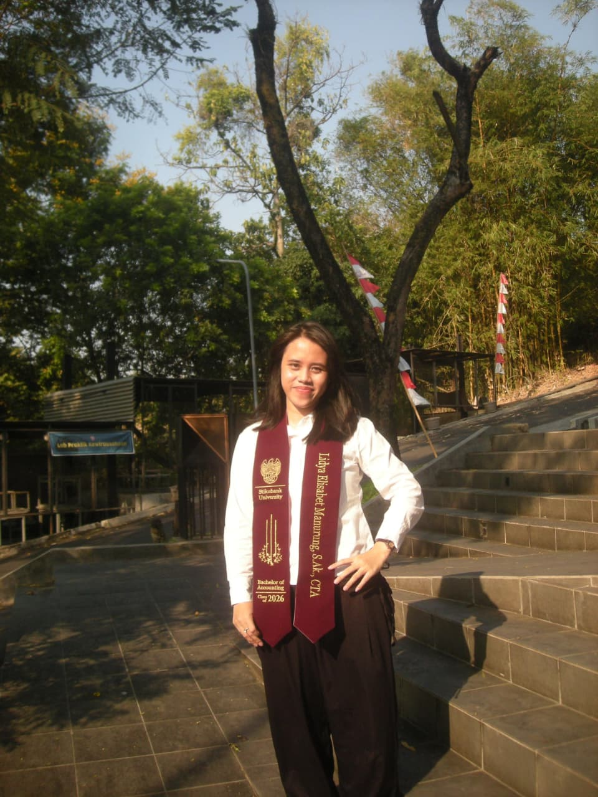
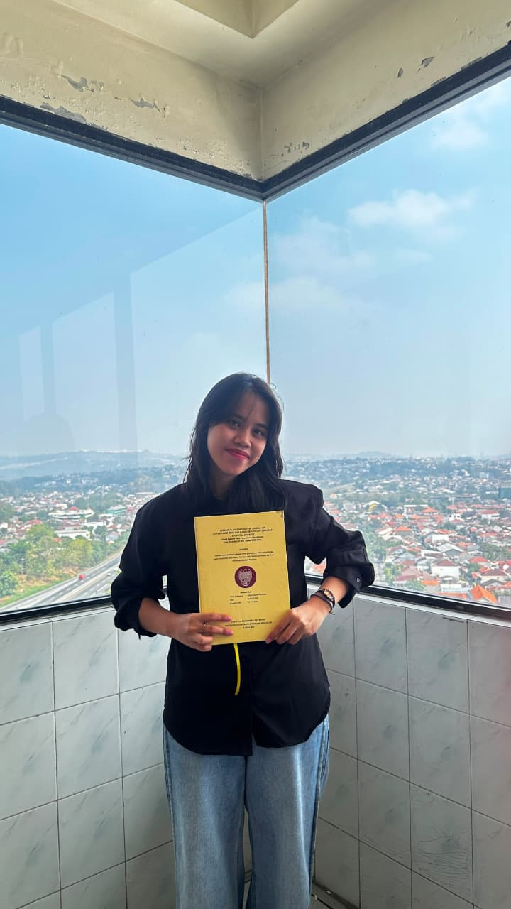
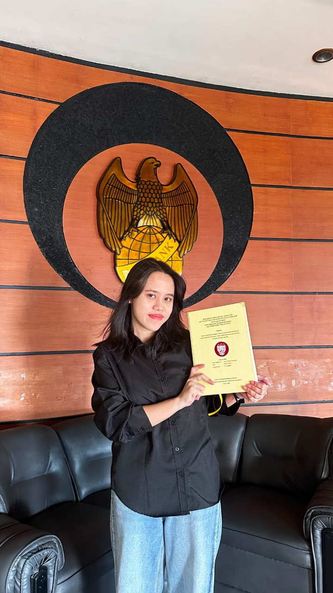
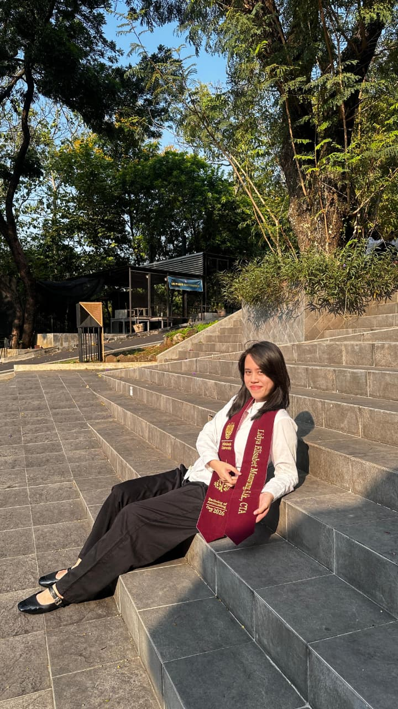

A little soundtrack for you
Press play and enjoy your special day ♡
A special day to remember ♡
Dear Lidyaa,
FIRST OF ALL, CONGRATULATIONS, AKHIRNYA ISTRI ASAHII SARJANA!!! 🎓💙
Akhirnya yaaa, Likk! Setelah segala drama, revisi, jurnal, ACC, dan perjuangan akademik yang rasanya kadang lebih panjang daripada episode drama Korea, kamu berhasil sampai di titik ini.
Hari ini resmi bertambah satu gelar di belakang nama: Lidya Elisabet Manurung, S.Ak. Kedengarannya keren banget. Tinggal satu pertanyaan penting: P INPO LOKER?? 😭
Tapi serius, aku ikut senang melihat kamu sampai sejauh ini. Semoga semua usaha, waktu, air mata, dan perjuanganmu selama kuliah bisa menjadi awal dari banyak hal baik yang menantimu. Kamu pantas merayakan pencapaian ini, jadi jangan lupa bangga sama dirimu sendiri, ya!
To the mother of five CORTIS kids 🍼⭐
Di tengah kesibukan menjadi sarjana, jangan sampai lupa menjalankan tugas negara sebagai ibu dari lima anak CORTIS dan istri Asahi. Anak-anak mungkin belum bisa bantu bayar tagihan, tetapi setidaknya mereka bisa memberi dukungan moral kepada ibunya yang sekarang resmi jadi sarjana. 😭
Jadwal comeback mereka mungkin padat, tetapi sekarang jadwal hidupmu juga memasuki era baru: THE EMPLOYED ERA. Amin paling serius! 😂💼
Semoga setelah ini kamu mendapat kesempatan yang baik, pekerjaan yang tepat, orang-orang yang mendukungmu, dan keberanian untuk melangkah ke masa depan. Semoga kamu juga tetap punya waktu untuk hal-hal yang kamu cintai, termasuk keluarga, teman, dan kelima anak kesayanganmu itu.
A little verse for you 🤍
"Ia membuat segala sesuatu indah pada waktunya." — Pengkhotbah 3:11
Semoga ayat ini selalu mengingatkanmu bahwa setiap orang punya waktu dan perjalanan masing-masing. Kalau nanti ada hal yang belum berjalan sesuai rencana, jangan buru-buru merasa tertinggal. Terus berusaha, berdoa, dan percaya bahwa Tuhan tetap menyertaimu di setiap musim kehidupan.
May your next chapter be filled with God's grace, unexpected blessings, genuine happiness, and opportunities that bring out the best in you.
Keep shining, Liliiiiiikk. Kamu bukan cuma manusia bertabur bintang, tetapi juga seseorang yang punya banyak hal baik untuk dibawa ke dunia ini. ⭐
With lots of love and a little bit of chaos,
Your friend (emaknya Ohyul dan bodhenya Gamaliel) ♡
P.S. Lima anak CORTIS boleh bangga punya ibu sarjana. Jangan lupa minta mereka ikut cariin ibuknya loker, xixiixi. 🤝💙
LITTLE MOMENTS, BIG MEMORIES
Journal ACC Celebration 📸
A little collection of your well-deserved happy moments.




✦ A small reminder that all your hard work was worth it. ✦
BONUS FAMILY PORTRAIT ✦
The Wife & The Five Kids 🍼💙
One proud graduate, one supportive husband, and five children who still need their mom's allowance. 😭
the kids came to support their mom's graduation 🥹💙
and of course, the proud husband 📸💍
hubby came with photographic evidence 😭Lilik's graduation day ft. her imaginary family. ⭐
Here's to your next chapter!
More dreams, more answered prayers, more adventures, and more reasons to shine. Congratulations, Lidya! 💙
Back to Cover ⭐